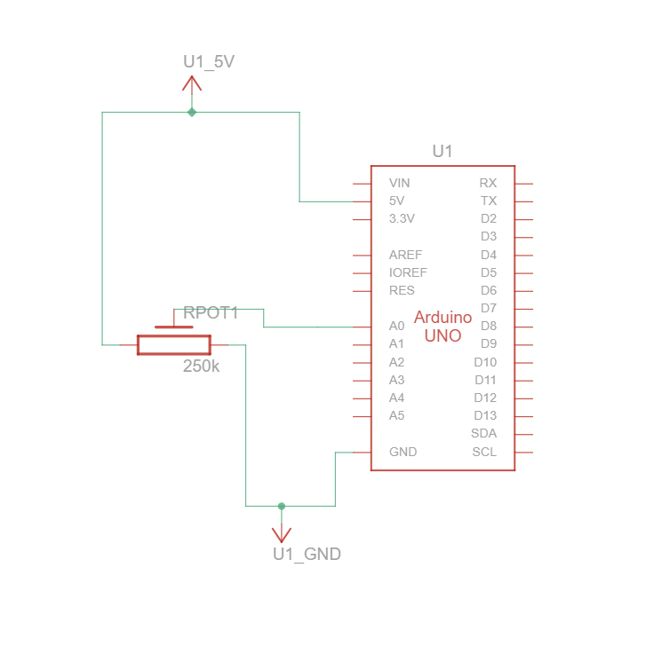

Arduino HW 14 - Tweak the Logo
IGME 470
HW14, the "Tweak the Logo" assignment is the culmination of serial communication assignments, communicating between Arduino and Processing to create an interactive visual experience. In this project, a potentiometer connected to the Arduino sends values through the serial port to a Processing sketch, which uses those values to change the background hue of an image.
This assignment showcases the power of combining physical computing with visual programming. By turning the potentiometer, you can cycle through the entire color spectrum. This is a simple but effective demonstration of what can be done using physical computing to create interactive experiences, such as an art installation.

The parts used:
- 1x Arduino Uno R3
- 1x 250 kΩ Potentiometer
Arduino Code
Click to view Arduino code
// import the serial library
import processing.serial.*;
// create an instance of the serial library
Serial myPort;
// create an instance of PImage
PImage logo;
// a variable to hold the background color
int bgcolor = 0;
void setup() {
size(1, 1);
surface.setResizable(true);
// set the color mode to Hue/Saturation/Brightness
colorMode(HSB, 255);
// load the Arduino logo into the PImage instance
logo = loadImage("http://www.arduino.cc/arduino_logo.png");
// make the window the same size as the image
surface.setSize(logo.width, logo.height);
// print a list of available serial ports to the Processing status window
println("Available serial ports:");
println(Serial.list());
// Tell the serial object the information it needs to communicate with the
// Arduino. Change Serial.list()[0] to the correct port corresponding to
// your Arduino board. The last parameter (e.g. 9600) is the speed of the
// communication. It has to correspond to the value passed to
// Serial.begin() in your Arduino sketch.
myPort = new Serial(this, Serial.list()[0], 9600);
// If you know the name of the port used by the Arduino board, you can
// specify it directly like this.
// port = new Serial(this, "COM1", 9600);
}
void draw() {
// if there is information in the serial port
if (myPort.available() > 0) {
// read the value and store it in a variable
bgcolor = myPort.read();
// print the value to the status window
println(bgcolor);
}
// Draw the background. the variable bgcolor contains the Hue, determined by
// the value from the serial port
background(bgcolor, 255, 255);
// draw the Arduino logo
image(logo, 0, 0);
}Processing Code
Click to view Processing code
// import the serial library
import processing.serial.*;
// create an instance of the serial library
Serial myPort;
// create an instance of PImage
PImage logo;
// a variable to hold the background color
int bgcolor = 0;
void setup() {
size(1, 1);
surface.setResizable(true);
// set the color mode to Hue/Saturation/Brightness
colorMode(HSB, 255);
// load the Arduino logo into the PImage instance
logo = loadImage("https://png.pngtree.com/png-clipart/20230927/original/pngtree-man-in-shirt-smiles-and-gives-thumbs-up-to-show-approval-png-image_13146336.png");
// make the window the same size as the image
surface.setSize(logo.width, logo.height);
// print a list of available serial ports to the Processing status window
println("Available serial ports:");
println(Serial.list());
// Tell the serial object the information it needs to communicate with the
// Arduino. Change Serial.list()[0] to the correct port corresponding to
// your Arduino board. The last parameter (e.g. 9600) is the speed of the
// communication. It has to correspond to the value passed to
// Serial.begin() in your Arduino sketch.
//myPort = new Serial(this, Serial.list()[0], 9600);
// If you know the name of the port used by the Arduino board, you can
// specify it directly like this.
myPort = new Serial(this, "COM8", 9600);
}
void draw() {
// if there is information in the serial port
if ( myPort.available() > 0) {
// read the value and store it in a variable
bgcolor = myPort.read();
// print the value to the status window
println(bgcolor);
}
// Draw the background. the variable bgcolor contains the Hue, determined by
// the value from the serial port
background(bgcolor, 255, 255);
// draw the Arduino logo
image(logo, 0, 0);
}
The Arduino wiring is very simple, it is mostly in the code. The code reads the analog value from the potentiometer (0-1023) and sends it over the serial port to Processing, a rendering program which is very similar to the Arduino IDE. The Processing sketch receives this value and maps it to the Hue, where the value controls the hue component of the background color.
The Processing sketch loads an image and resizes the window to match the image dimensions. As serial data arrives, it updates the background color's "R"/red value.
Demo